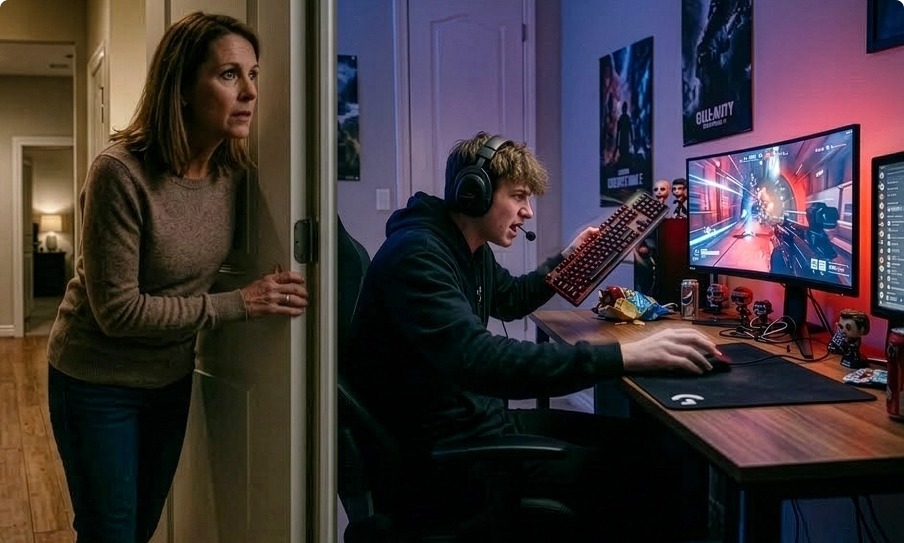
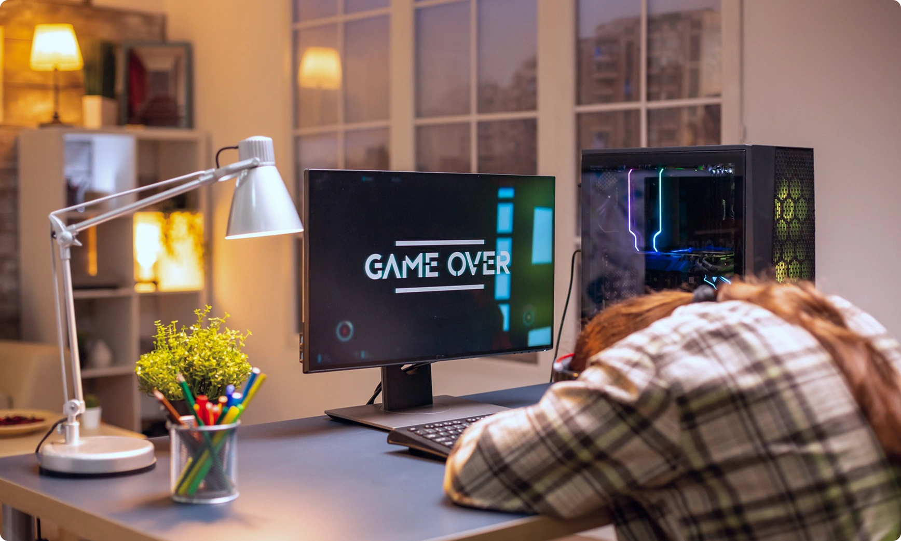
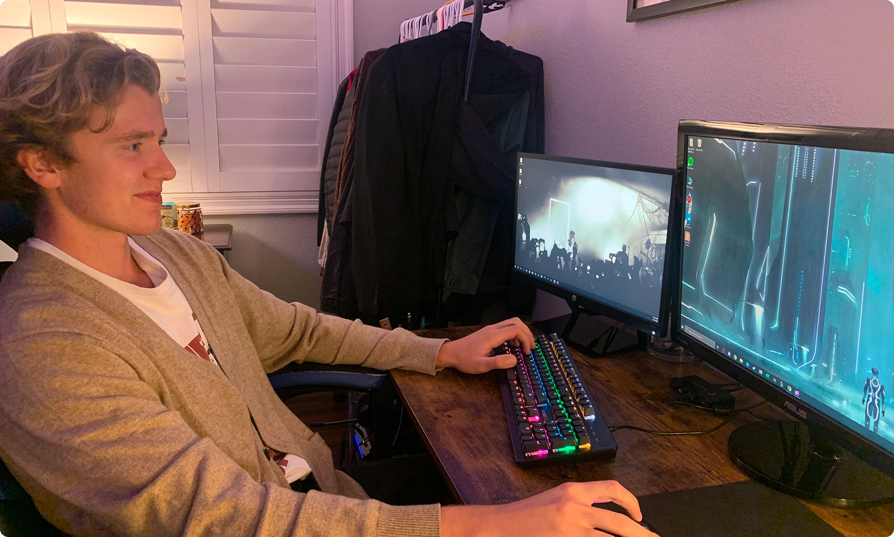
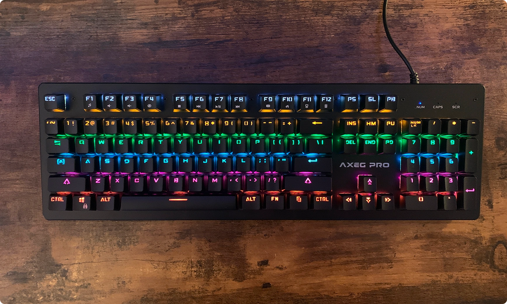
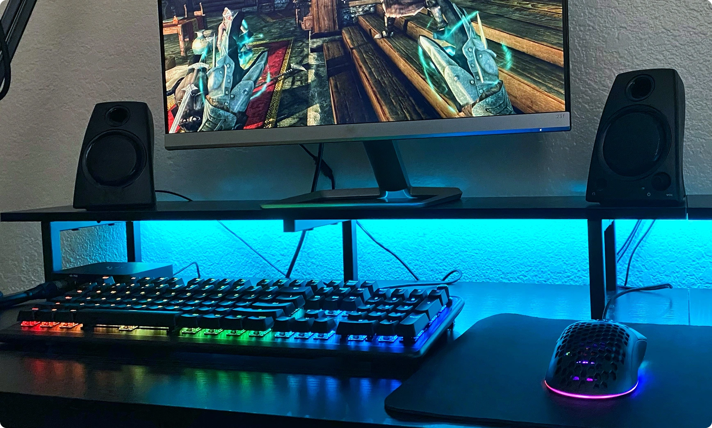
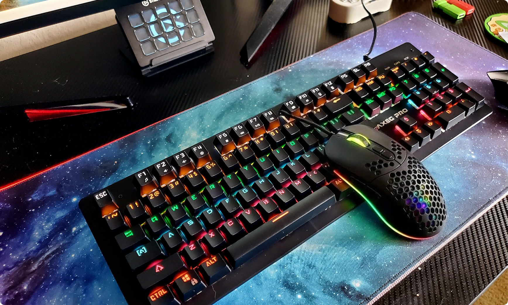

Why So Many Kids Rage at Games Today — And Why Parents Are Blaming the Wrong Thing
Written by William Greens
| March 9, 2026 |


A closer look at what’s actually happening behind the screen — and the simple upgrade many families are discovering too late.
If you’ve ever walked past your child’s room during a gaming session, you probably know the sound.
A sudden shout.
Keyboard smashing.
Mouse slamming.
Frustrated yelling at teammates through a headset.
And eventually:
“THIS GAME IS BROKEN!”
For many parents and grandparents, gaming looks chaotic — even unhealthy. It feels like kids are simply getting too emotional over a screen.
But after speaking with competitive gamers, casual players, and even a few esports coaches, something surprising kept coming up again and again:
In many cases, the problem isn’t the game. It’s the equipment.
And once you understand why, a lot of that frustration suddenly makes sense.
Most Families Never Realize...

Modern games are far more demanding than they were even five years ago.
Reaction windows are smaller.
Movement precision matters more.
Timing errors are punished instantly.
Yet most kids are still playing with:
- ☑️ Cheap office keyboards bundled with PCs
- ☑️ Old wireless mice designed for browsing, not precision
- ☑️ Equipment with inconsistent input delay
To someone watching, it looks like a child losing control emotionally.
But from the player’s perspective, something else is happening:
- ⛔ They press a key — and the character reacts slightly late.
- ⛔ They aim carefully — but the cursor overshoots.
- ⛔ They click first — yet still lose the fight.
After hours of this, frustration builds fast.
One gaming coach described it simply:
“Imagine trying to play football wearing shoes two sizes too big. You’d blame yourself — until you realized the equipment was holding you back.
ONE OF OUR CUSTOMERS SAID:
“Initially, I assumed gaming peripherals were mostly aesthetic upgrades — colorful lights and branding.
But after testing several setups with my younger kids (age 11– and 17), one pattern became obvious:
When switching from standard equipment to proper gaming gear, behavior changed almost immediately.
- ✅ Less shouting
- ✅ More focus
- ✅ Calmer play sessions
That’s why I recommend this to every parent — the AXEG Pro keyboard and mouse combo.
At first glance, it looked like another RGB gaming set.
But the experience turned out to be different for one specific reason. And I’m loving this!!!
The biggest problem you can make...

Most parents upgrade only one device.
They buy a gaming mouse but keep a slow keyboard.
Or upgrade the keyboard while using an inconsistent mouse.
This creates a mismatch.
Your hands receive different feedback speeds from each device, forcing your brain to constantly adjust timing.
Gamers describe this as feeling “off”, even if they can’t explain why.
The AXEG Pro bundle works because both devices are designed around the same principles:
- ✅ Immediate response
- ✅ Consistent tactile feedback
- ✅ Lightweight movement
- ✅ Predictable control
When both inputs behave similarly, muscle memory develops faster — and gameplay feels smoother.
That’s when frustration starts disappearing. And kids starts loving you.
Verdict about this keyboard:

When a key produces a physical click at activation, the brain instantly confirms the action without needing visual verification.
Players stop looking down.
They stop double-pressing keys.
Confidence increases.
During testing, younger players adapted surprisingly fast. Instead of hammering keys repeatedly, presses became lighter and more controlled.
The keyboard also supports up to 50 million keystrokes durability — which matters in households where enthusiasm sometimes translates into heavy usage.
Additional practical improvements include:
- Adjustable angle for wrist comfort during long sessions
- Full-size layout with shortcuts and numpad
- RGB lighting that helps locate keys in darker rooms
Interestingly, the lighting wasn’t just cosmetic — younger players reported faster orientation during gameplay at night.
Verdict about this mouse:

If the keyboard builds confidence, the mouse controls precision.
The AXEG Pro mouse weighs just 65 grams— significantly lighter than standard office mice.
That difference becomes noticeable within minutes.
Lighter weight means:
- Faster directional corrections
- Less wrist fatigue
- More consistent aiming during longer sessions
The honeycomb design reduces drag while maintaining structure, and adjustable DPI levels allow sensitivity changes directly on the mouse.
One unexpected observation:
Players stopped lifting and repositioning the mouse as often — a small behavior change that noticeably improved accuracy
consistency. The wired connection also eliminates signal interruptions common with cheaper wireless devices.
For competitive gameplay, stability often matters more than convenience.
Overal verdict:

Across several sessions, changes were subtle but clear.
Kids who previously blamed teammates or games started focusing more on strategy.
Less desk slamming.
More calm communication.
Longer uninterrupted play sessions.
One parent noted:
“He stopped yelling at the computer. That alone made it worth it.”
Another surprising crossover benefit appeared during homework and typing tasks.
Mechanical feedback improved typing rhythm, and lighter mouse movement reduced wrist fatigue during schoolwork.
It wasn’t just a gaming upgrade — it became a daily-use improvement.
Standard accessories often prioritize cost above experience.
Common differences noticed:
Standard Equipment
Soft, unclear key presses
Heavy mouse movement
Occasional lag
Fast wear over time
Standard Equipment
Soft, unclear key presses
Heavy mouse movement
Occasional lag
Fast wear over time
The difference isn’t dramatic in appearance — but very noticeable in use.
Why the Bundle Makes More Sense Than Buying Separately:
Parents often try upgrading one piece at a time. But mismatched devices delay improvement.
Upgrading both simultaneously allows players to recalibrate muscle memory once — instead of repeatedly adjusting.
That’s why many gamers recommend switching input devices together rather than individually.
The bundle simply accelerates that process.

Who This Is Actually For:
Parents who want to give their kids a better gaming experience
- ✅ Kids getting increasingly frustrated with games
- ✅ Teens starting competitive or online multiplayer gaming
- ✅ Parents looking for a meaningful gift upgrade
- ✅ Grandparents unsure what gaming gift actually helps
How to Get the AXEG Pro Keyboard + Mouse Bundle
The AXEG Pro bundle is currently available as a combined package directly through the official offer page.
Buying together typically provides better value than purchasing separate peripherals — and ensures both devices are optimized to work as a single setup.
If you’re considering a practical upgrade — or looking for a gift that genuinely improves daily gaming experience — this is one of the more logical starting points.
Final Thought

Most parents assume gaming frustration comes from attitude.
But often, it’s friction — tiny delays and inconsistencies repeated hundreds of times per session.
Remove that friction, and something unexpected happens:
- ✅ The shouting fades.
- ✅ Focus replaces frustration.
- ✅ And gaming becomes what it was meant to be — fun again.
If that sounds familiar in your household, this bundle might be worth a closer look.
GET the AXEG Pro Keyboard + Mouse Bundle Here